Every mode of the Advanced Calculator, explained.
A single-page reference for Standard, Scientific, Programmer, Converter, Statistics, Equation Solver, Graphing, Matrix, Vector, Complex, Regression, and Finance modes — what each one does, a worked example for every feature, and a real screenshot from the app.
Twelve modes, one app
Standard
Everyday arithmetic with the standard order of operations, four-slot memory (MC / MR / M+ / M-), and Answer (ANS) recall for chaining calculations together.
- Order-of-operations aware expression entry (× and ÷ bind before + and −)
- Memory clear / recall / add / subtract, independent of the current entry
- ANS recalls the last computed result into a new expression
- Percent key for quick percentage math
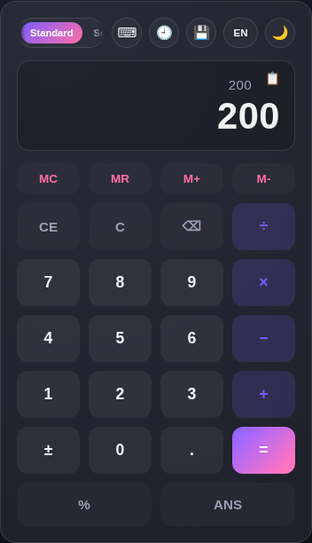
Scientific
Everything in Standard mode, plus trigonometry, inverse trig (sin⁻¹/cos⁻¹/tan⁻¹), hyperbolic functions, log/ln, powers, factorial, combinatorics (nCr/nPr), GCD/LCM, and an arbitrary-base logarithm (logb).
- DEG/RAD toggle — shared with Complex mode's polar-form display
- sin, cos, tan and their inverses, plus sinh/cosh/tanh
- x², x^y, √, n!, 1/x, π, e
- nCr, nPr, GCD, LCM, and logb(x, base)
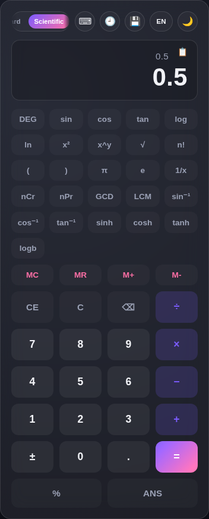
Programmer
Work in HEX, DEC, OCT, or BIN using the base tabs above the display, with bitwise AND / OR / XOR / NOT and bit-shift operators. The panel below the display also shows the ASCII character for the current value's low byte.
- Live HEX / DEC / OCT / BIN readout of the current value, always in sync
- Bitwise AND, OR, XOR, NOT, and left/right shift (arithmetic, sign-preserving)
- MOD and truncated integer DIV, safe against division by zero
- ASCII viewer: shows the printable character for bytes 32–126, or "non-printable" otherwise
- Full 32-bit two's-complement handling for negative values across all bases
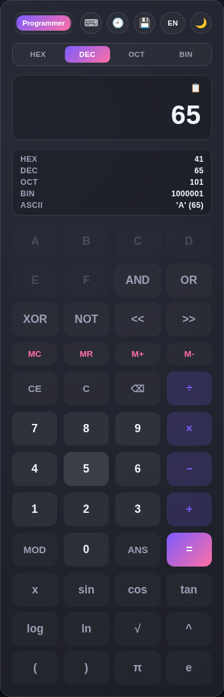
Converter
Convert between units across Length, Weight, Temperature, Data, Area, Volume, Speed, Time, Angle, and Currency. Pick a category tab, choose the From/To units, then type a value. Currency rates are static (not live), so conversions still work fully offline.
- Nine unit categories, each with its own set of From/To dropdowns
- Swap button to instantly flip From and To
- Angle category: Degree, Radian, and Gradian
- Currency category carries an explicit "rates are static" disclaimer in the UI
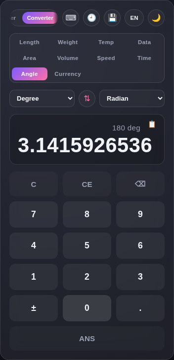
Statistics
Add a list of numbers to get the count, sum, mean, median, mode, quartiles, IQR, population/sample standard deviation, and the coefficient of variation (CV — sample std dev ÷ mean, as a percentage).
- Running dataset shown as removable chips — tap × to drop a value and recompute
- Q1 / Q3 / IQR via the median-of-halves method
- Both population (σ) and sample (s) standard deviation
- Coefficient of Variation (CV) — undefined (shown as "—") when there's only one value or the mean is zero
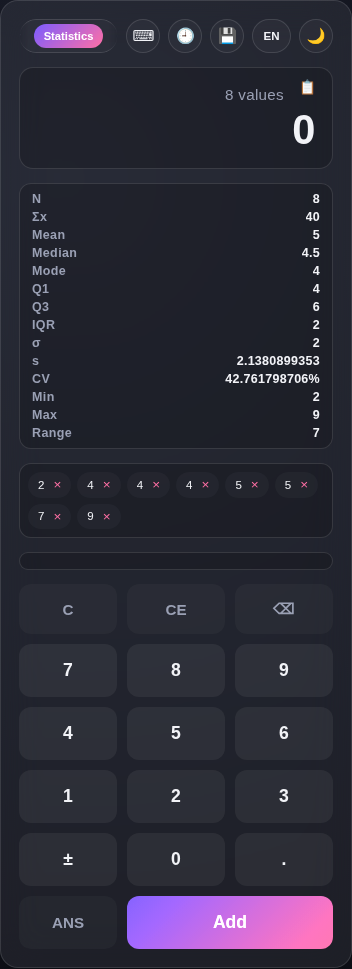
Equation Solver
Solve Linear (ax + b = 0), Quadratic (ax² + bx + c = 0), Cubic (ax³ + bx² + cx + d = 0), a System 2×2, or a System 3×3 of linear equations — including complex roots for quadratics and cubics.
- Five equation types on one set of tabs; the coefficient fields adapt to each
- Quadratics/cubics report complex roots (e.g. "0 ± 1i") instead of failing on no real solution
- Systems classify correctly between exactly-one-solution, no-solution (parallel), and infinite-solutions (coincident) cases, via a proper rank comparison
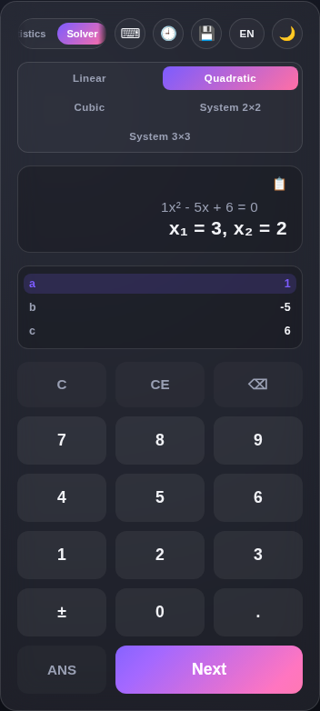
Graphing
Type f(x) — and optionally g(x) — with the on-screen keypad, then use the toolbar for Roots, ∫dx, Intersect, or a value Table. Fit auto-scales the Y range to the curve within the current X window. Tap the graph itself to trace a point and see its slope.
- Two functions at once, plotted in distinct colors
- Root finding, numerical integration, and f(x)/g(x) intersection points
- Zoom +/−, Reset, and Fit (auto-scales Y to the curve, X unchanged)
- An X/Y range readout below the canvas shows exactly what's in view
- Tap-to-trace shows the (x, y) coordinate and instantaneous slope dy/dx
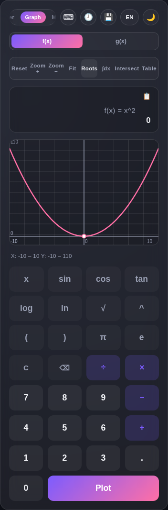
Matrix
Switch between 2×2 and 3×3 sizes, enter values into matrices A and B by tapping a cell, then compute A+B, A−B, A×B, Det, Inverse (via cofactor expansion for 3×3), or the Transpose of whichever matrix is active.
- Tap-to-select cell editing, with Tab moving across all 9 cells of A then into B
- Determinant and inverse for both 2×2 and 3×3, reporting "Singular matrix" cleanly instead of Infinity/NaN
- Transpose (Aᵀ / Bᵀ) of whichever matrix — A or B — is currently active
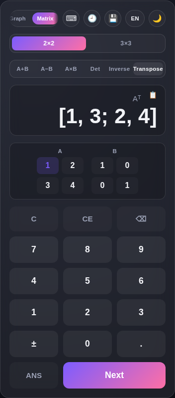
Vector
Enter two 3D vectors A and B by tapping their x/y/z fields, then compute A+B, A−B, the dot product A·B, the cross product A×B, the magnitude of whichever vector is active, or the angle between A and B.
- Full 3D vector algebra: addition, subtraction, dot product, cross product
- Magnitude of whichever vector — A or B — is currently active
- Angle between A and B, in the current DEG/RAD unit
- Zero-vector edge case reports a clean error instead of NaN
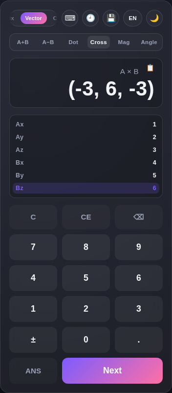
Complex
Enter two complex numbers A and B by tapping their Re/Im fields, then compute A+B, A−B, A×B, A÷B, or Mod/Arg/Conj/Polar of whichever number is active. Polar shows r ∠ θ using the current DEG/RAD setting.
- Full complex arithmetic, including division (with a clean error on divide-by-zero)
- Modulus |z|, Argument (angle), and Conjugate
- Polar-form display: r ∠ θ, sharing the same DEG/RAD toggle as Scientific mode
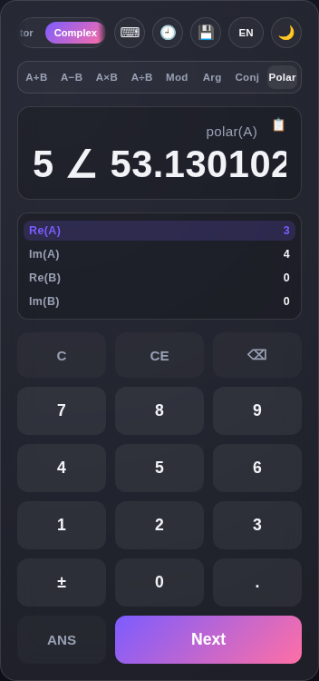
Regression
Add (x, y) pairs to fit a least-squares line y = mx + b, with the correlation coefficient r and r² shown alongside it.
- Point-by-point entry with removable chips, live-refitting on every change
- Reports slope (m), intercept (b), correlation r, and r²
- Correctly flags a vertical line (constant x) as unfittable, and fewer than 2 points as insufficient
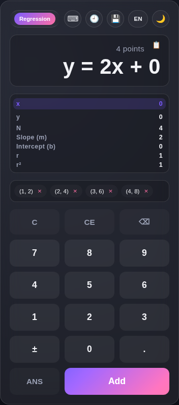
Finance
Everyday percentage and money math: what percent of a value, percent change, discounts, simple/compound interest, splitting a tip, and margin/markup on a cost and sell price. Pick a tab, tap a field to edit it.
- % Of, % Change, Discount, Simple Interest, Compound Interest, Tip Split, and Margin/Markup — seven calculators on one set of tabs
- Margin/Markup shows why the two numbers differ: same profit, different denominator
- Every type guards against divide-by-zero with a clear "Value can't be zero" message
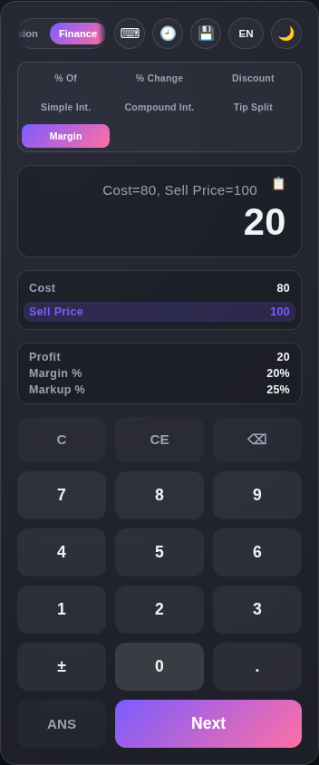
Works fully offline, on any device
Advanced Calculator is a Progressive Web App (PWA). Open it once in a browser and a service worker caches the entire app — every mode, every asset. After that, it keeps working with the network fully off. On mobile, use your browser's "Add to Home Screen" / "Install App" option to get it as a standalone app icon, no app store required.
No accounts, no servers
Every calculation runs entirely in your browser. Nothing is ever sent anywhere — there's no backend at all.
Currency rates are static
Currency conversion uses fixed reference rates baked into the app, not a live feed — a deliberate trade-off so it never breaks offline. The Converter's Currency tab shows a disclaimer to make this explicit.
Stays up to date automatically
When you do have a connection, the app quietly checks for updates in the background and refreshes its offline cache — you don't need to reinstall anything.
Theme & language
Toggle between dark and light themes, and switch the entire interface — including digits in every result — between English and Marathi (मराठी), from the icon row at the top of the app. Both preferences are remembered on your device.
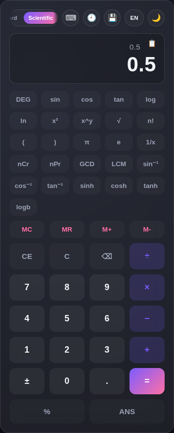
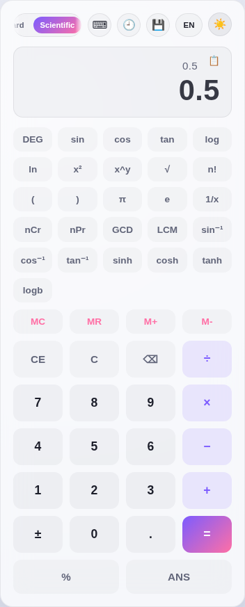
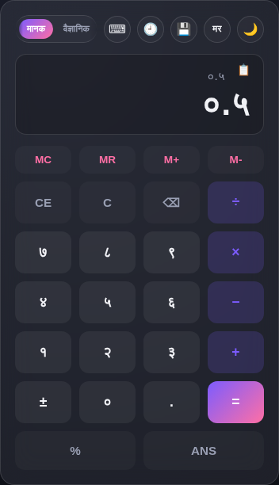
Backup & Restore
Every mode's data — calculation history, memory, matrices, complex numbers, regression points, and more — lives in your browser's local storage. The Backup & Restore panel (the floppy-disk icon) lets you export it all to a file, then import it again on another device or after clearing browser data. "Reset All Data" wipes everything back to defaults.
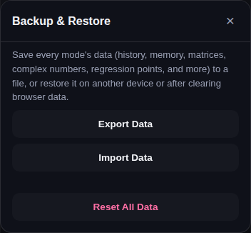
The built-in Help Guide
Every mode has its own Help Guide entry — reachable via the keyboard icon at the top of the app — with a description and worked examples specific to whichever mode you're currently in. It's the same content this manual is built from, always in sync with the app.
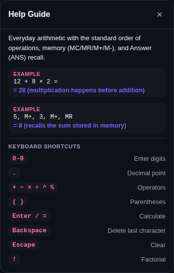
Keyboard shortcuts
Every mode is fully operable without a mouse. Digits and operators match what's on the keypad; the shortcuts below are common across most modes (each mode's own Help Guide lists the exact set for that mode).
| Shortcut | Action |
|---|---|
| 0–9 | Enter digits |
| . | Decimal point |
| + − × ÷ ^ % | Operators |
| ( ) | Parentheses |
| Enter / = | Calculate, add a value/point, or plot, depending on mode |
| Tab | Move to the next field or cell (Solver, Matrix, Vector, Complex, Regression, Finance) |
| Backspace | Delete the last character |
| Escape | Clear the current entry or dataset |
| ! | Factorial (Standard / Scientific) |
Accessibility
Keyboard-operable field rows
Every tap-to-select field — Solver coefficients, Matrix cells, Vector/Complex/Finance/Regression fields — carries role="button", tabindex="0", and responds to Enter/Space, not just a mouse click.
Dialogs trap focus properly
The Help Guide and Backup & Restore dialogs are proper role="dialog" modals: focus moves in on open, is trapped while open, and returns to where you were on close.
Digits localize, not just labels
Switching to Marathi doesn't just translate button text — every digit shown in a result or display renders as a Devanagari numeral too.